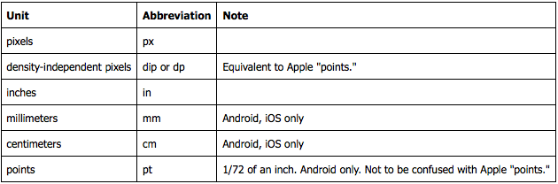

Welcome To The
Titanium 2.0 GA
The latest release of the only cross-platform mobile development framework with native UI and performance
AGENDA
- Release Overview
- What's New in 2.0
- Known Issues
- Fixes and Enhancements
- Q&A

RELEASE OVERVIEW
Titanium Mobile Release 2.0 is a feature release of the Titanium Mobile SDK, including several new features and a number of bug fixes and parity improvements.
WHATS NEW IN 2.0?
- Layout System Updates
- Appcelerator Cloud Services Support
- Mobile Web Release Candidate
- Modules API
- Android Geolocation Enhancements
Layout System Updates
View Types & Auto Behavior
2 new constants: Titanium.UI.FILL and Titanium.UI.SIZE to replaces the 'auto' keyword
- Auto Size Views - 'auto' == Ti.UI.SIZE
- Auto Fill Views - 'auto' == Ti.UI.FILL
- Auto Fill Width Views - fills available width by default, scales vertically to fit contents
Batch Layout Updates
- In previous releases, each update to a layout parameter could trigger a layout cycle.
startLayout()andfinishLayout()place view into deferred layout modeupdateLayout()method allows you to update a set of layout parameters in a single operation.
Batch Layout Code
// Put a view into deferred layout mode.
myView.startLayout();
myView.top = 50;
myView.left = 50;
myView.width = 200;
myView.finishLayout();
// Update multiple layout parameters in a single operation
// Same effect as above
myView.updateLayout({
top : 50,
left : 50,
width : 200
});
// Put a view into deferred layout mode.
myView.startLayout();
myView.top = 50;
myView.left = 50;
myView.width = 200;
myView.finishLayout();
// Update multiple layout parameters in a single operation
// Same effect as above
myView.updateLayout({
top : 50,
left : 50,
width : 200
});
Universal Unit Support
All platforms now support specifying units for size and position values. The following table lists the supported units:
APPCELERATOR CLOUD SERVICES (COCOAFISH)
ACS Modules
- This release includes bundled Titanium modules for using Appcelerator Cloud Services (ACS)
- ACS modules are not part of core. To use the main ACS module, you must import it using
require - To use ACS push notifications on Android, you must also import the Titanium.Push module
- API reference for Titanium.Cloud
- ACS also provides a REST API and native SDKs for many platforms. See cloud.appcelerator.com
MOBILE WEB RELEASE CANDIDATE
- The majority of the Titanium Mobile API is now implemented for Mobile Web.
- Mobile Web implements a cross-platform subset of the Titanium Mobile APIs, excluding any platform-specific APIs and non-browser based APIs
- Certain APIs are subject to limitations on Mobile Web because of the constraints imposed on application running in the browser. For more information, see Mobile Web Limitations